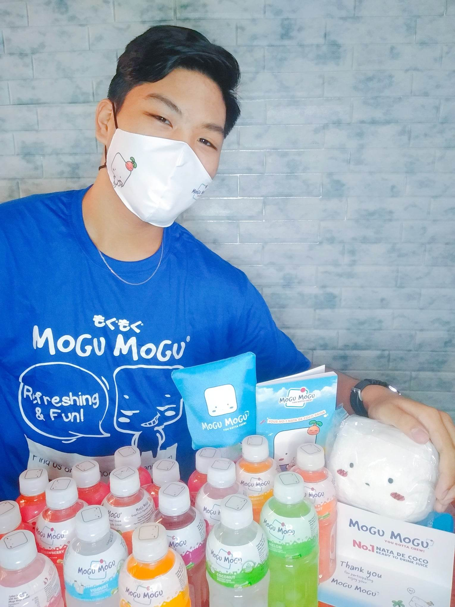

Joemar Malabanan was born on February 05, 2007, in Makati City, Philippines.
He is only child. A water bearer or a sign of Aquarius. He's height is 168cm and weight of 65kg. He completed his elementary education at Guadalupe Viejo Elementary School. He believed in the saying that "Life isn't perfect, but your hair can be." He is now a graduating student of General Pio Del Pilar National High School. One day, he wants to be a greatest Filipino Journalist. He is adventurous person and loves to take pictures that's why he has already Instagram account at the age of 10. He is friendly, kindhearted, thoughtful, straightforward, and go with the flow type of person. He can also do singing, dancing, and acting.
In 2021, Joemar became a part of the campaign of Mogu Mogu Philippines to promote the brand itself. The advertisement video that he made was published by Mogu Mogu on their facebook page. As per him, this is one of his greatest achievement in his life. Aside from the bunch of Mogu Mogu drink that he received he knows that he proved himself that nothing is impossible when you want it. "He is not Joemar Malabanan for nothing."
 |